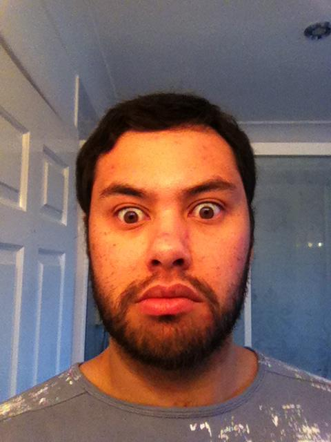

I am a photographer with over ten years experience and I am based in Reading. I cover the Berkshire, Buckinghamshire, Oxfordshire and Hampshire counties offering a range of services including Weddings, Family Portraiture and Commercial Photography.
I have a Bachelor of Arts in Photography and Digital Imaging and I am passionate about my work and have travelled the world perfecting my skills. After University I spent two years travelling the seven seas with a luxury cruise line and rapidly became a senior ship photographer. I sailed through Australasia, the Polynesian and Pacific Islands, Hawaii, the Caribbean and USA and even to the magnificent glacial inner passages of Alaska, the backdrops to my photography has been ever varied and my style constantly adapted and perfected. I take great pride in my work, to my attention to detail and crafting the perfect finished products for my clients.
On returning to the UK five years ago I established Anthony Prestidge photography to bring the huge wealth of experience I gained in different photographic styles to the business of wedding photography. I use only the top of the range cannon digital SLR cameras that give me the versatility I need to combine these styles. You will find me friendly and easy going and we can discuss together the images you want achieve to capture the story of your wedding day.